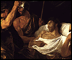

The Minneapolis Institute of Arts
Main Menu ~ Quiz Introduction ~ Bonus Answer
Quiz for Kids and Parents: Bonus Question
 (c)  (c)
(c)
Brain Teaser: The Death of Germanicus is a history painting. The artist is looking back in Roman history and illustrating a well-known story.
What clues has he given that the people are Roman?
How do you think he knew what kind of clothing the Romans wore?
Think about it or talk it over, then click here